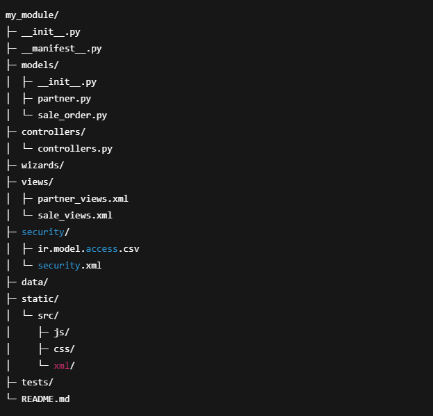

2.1 - Tools en omgeving
- Odoo 18
- Odoo.sh
- python 3.12
- Postgres SQL
- Jinja 2
- docker
- git
- vscode
- bash
Odoo 18
Odoo 18 is een moderne bedrijfsapplicatie
waarmee organisaties hun processen — van CRM en boekhouding
tot voorraadbeheer — in één platform kunnen beheren. De backend
draait op PostgreSQL als relationele database, terwijl
de logica en uitbreidbaarheid in de backend zijn gebaseerd op Python.
Voor het genereren van dynamische views en rapporten maakt
Odoo gebruik van de template engine Jinja2,
waardoor ontwikkelaars flexibel en efficiënt templates kunnen bouwen.
Hierdoor biedt Odoo 18 zowel bedrijven alsontwikkelaars een robuust en schaalbaar ecosysteem voor MKB-bedrijven.
Odoo.sh
Odoo.sh is het cloudplatform van Odoo dat speciaal is ontworpen om Odoo-implementaties eenvoudig te ontwikkelen,
testen en uit te rollen. Het platform integreert naadloos met Git en GitHub, waardoor ontwikkelaars rechtstreeks
vanuit hun repository nieuwe modules,
updates en branches kunnen deployen. Odoo.sh automatiseert daarnaast builds, testing en backups,
zodat teams zonder complexe infrastructuur toch een professionele DevOps-omgeving hebben.
Hierdoor biedt Odoo.sh een gestroomlijnde, veilige en schaalbare manier om Odoo-projecten te beheren.
Visual Studio Code
Visual Studio Code (VS Code) is een lichte maar krachtige IDE die ideaal is voor het ontwikkelen van
Odoo-projecten dankzij
zijn flexibiliteit en uitgebreide ondersteuning aan extensies. Met ingebouwde ondersteuning voor Python,
Git-integratie en features zoals IntelliSense, debugging en code-formatting, versnelt VS Code het
ontwikkelproces aanzienlijk.
Ontwikkelaars kunnen eenvoudig werken met Git-branches, commits en pull requests rechtstreeks vanuit de editor,
Dit maakt het aansluitend met GitHub en Odoo.sh. Hierdoor biedt VS Code een efficiënte, moderne
omgeving voor Odoo-ontwikkeling.
Docker
Docker wordt in dit project gebruikt om een geïsoleerde Odoo 18-ontwikkel en test instantie te draaien.
Door Odoo in een container te plaatsen, inclusief benodigde services zoals PostgreSQL,
kunnen ontwikkelaars snel lokale omgevingen opzetten die exact overeenkomen met staging en productie.
Dit maakt het eenvoudiger om maatwerk te bouwen, testen en debuggen voordat wijzigingen via Git/GitHub naar
Odoo.sh worden gepusht. Dankzij Docker blijven omgevingen consistent, schaalbaar en gemakkelijk te resetten, wat
het ontwikkelproces
betrouwbaarder en efficiënter maakt.
2.2 - Architectuurpatroon
Model-View-Controller
is een architectuurprincipe dat software opsplitst in drie duidelijk gescheiden onderdelen,
zodat applicaties overzichtelijk, schaalbaar en onderhoudbaar blijven:
-
Model (M)
Het Model bevat de data en de logica die bepaalt hoe die data wordt verwerkt.
Het regelt zaken zoals:
- Databasemodellen en hun velden
- Relaties tussen objecten
- Businesslogica, validaties en berekeningen
-
View (V)
De View bepaalt hoe informatie wordt weergegeven aan de gebruiker. Denk aan:
-
Schermen, formulieren en lijsten
-
Templates voor rapporten of e-mails
-
Interactiecomponenten zoals knoppen en widgets
-
Controller (C)
De Controller vormt de schakel tussen Model en View.
Hij verwerkt input van gebruikers, voert businesslogica uit en bepaalt welke data aan de View wordt gestuurd.
Voorbeelden:
-
Acties uitvoeren wanneer een gebruiker op een knop klikt
-
Validaties toepassen voordat gegevens worden opgeslagen
-
Workflows starten of server-side berekeningen doen
2.3 - Code conventies
-
Stijl & Python-conventies
Odoo-ontwikkeling volgt in grote lijnen PEP8 als basis: consistente indentatie,
duidelijke spatiëring en betekenisvolle variabelenamen. Tools zoals Black,
isort en flake8/pylint-odoo worden ingezet om automatische formatting en kwaliteitscontrole te waarborgen.
Modules, klassen en methodes bevatten korte maar duidelijke docstrings, zodat code begrijpelijk en onderhoudbaar
blijft.
-
Naamgeving
Odoo volgt duidelijke naamgevingsregels:
- Klassen in CamelCase
- Methoden, variabelen en velden in snake_case
- Constanten in ALL_CAPS
- Models in my_module.model
- XML-ID’s met module-prefix my_module.view_partner_form
- Mappen/bestanden in snake_case
-
Module-structuur
Een correcte mappenstructuur is essentieel voor overzicht en schaalbaarheid.
Odoo-modules worden georganiseerd in logische onderdelen zoals:
models/,
views/,
controllers/,
security/,
data/ en
tests/
Ieder model heeft bij voorkeur een apart Python-bestand, en views worden opgesplitst per model om onderhoud en
extensies eenvoudiger te maken.

2.4 - Softwareontwikkelingsmethodiek
Incrementele en Iteratieve Ontwikkeling
Voor de ontwikkeling van Odoo 18 modules wordt een combinatie van incrementele en
iteratieve ontwikkeling toegepast.
Dit zorgt ervoor dat nieuwe functionaliteit stapsgewijs wordt opgeleverd, terwijl bestaande onderdelen continu
worden verbeterd en geoptimaliseerd.
Incrementele ontwikkeling
Nieuwe onderdelen van het systeem worden in een afzonderlijke omgeving ontwikkeld.
Elk increment is een volledig functioneel onderdeel dat direct in de omgeving kan worden gebruikt en getest.
Voorbeelden in dit project:
- Maatwerk ontwikkelde CMS-blokken die niet standaard beschikbaar zijn in Odoo.
- Extra website modules toegevoegd als afzonderlijk increment.
- Standaard CMS-blokken van Odoo gebruikt waar geen maatwerk nodig was, als volgende increment.
Iteratieve ontwikkeling
Bestaande functionaliteit wordt herhaaldelijk aangepast, verfijnd en verbeterd op basis van feedback of
optimalisatiebehoeften.
Dit gebeurt nadat een increment is geïmplementeerd en kan betrekking hebben op:
- Bugfixes en foutoplossingen in modules of CMS-blokken.
- Optimalisaties van formulieren, workflows en performance.
- Verfijningen van layout, styling of gebruikerservaring.
Workflow in het Odoo-project
- Ontwikkeling van nieuwe modules lokaal in Docker.
- Versiebeheer en code review via Git/GitHub.
- Deployment naar Odoo.sh development/staging branch voor testen.
- Feedback verzamelen van eindgebruikers of Product Owner.
- Iteratieve verbeteringen en bugfixes uitvoeren op bestaande functionaliteit.
- Voltooide increments worden definitief uitgerold naar productie.
Voordelen van deze aanpak
- Nieuwe functionaliteit kan stap voor stap worden toegevoegd zonder het volledige systeem tegelijk op te
leveren.
- Bestaande modules blijven evolueren en verbeteren op basis van daadwerkelijke gebruikersfeedback.
- Flexibiliteit bij veranderende eisen of aanvullende wensen.
- Snelle oplevering van werkende functionaliteit, terwijl kwaliteit en stabiliteit behouden blijven.